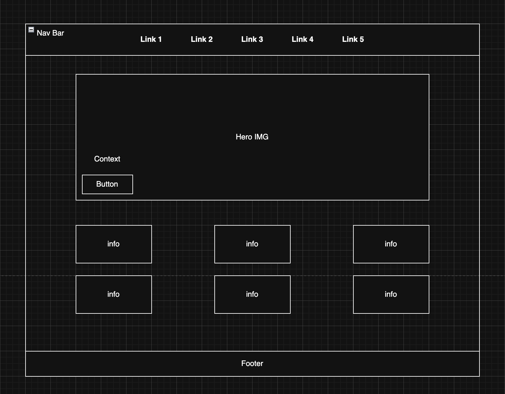

Project Overview
Project Name: StoryGate
Client Category and Project Category
- Client Category: Category 02 — client is outside of the class
- Project Category: Website for an individual promoting a concept-driven media discovery project
Project Overview
Application Description and Purpose
StoryGate is a web-based application developed for an outside client who wanted a cleaner, more beginner-friendly platform to help users discover anime and manga through structured recommendations, genre breakdowns, and guided starting points. The purpose of this application is to simplify the process of finding new content by organizing anime and manga into clear categories based on themes, genres, tone, and experience level.
The application also supports users who may feel overwhelmed by the large number of available titles by providing a more structured entry point into different types of content. In addition, it helps users understand storytelling styles, tone, and complexity so they can make more informed decisions about what to watch or read next.
Intended Users
- Individuals who are new to anime and manga and are unsure where to begin
- Casual viewers who are looking for new recommendations
- Users who want to explore specific genres or themes
- Individuals interested in understanding different types of storytelling within anime and manga
Overview of Website Content
- Curated anime and manga recommendations
- Genre explanations and breakdowns
- Beginner guides for entry-level users
- Featured content sections highlighting popular or notable titles
- Informational sections describing themes, tones, and storytelling styles
- A contact form for user feedback and suggestions
Client Information
- Client Name: [private]
- Organization / Business: Independent StoryGate Client Project
- Client Email Address: [private]
- Client Phone Number: [private]
Wireframe

Site Map

Pages Included in the Site
- Home
- Recommendations
- Genres
- Beginner Guide
- Contact
Page Design
1. Home Page
- Purpose: Introduce users to StoryGate and highlight featured content
- Audience: All users
- Content: Overview of the site, featured recommendations, quick navigation
- User Input: No
- Validations: N/A
- Elements: Links and navigation buttons
- Actions: Navigate to other sections
- Special Notes: Serves as the main entry point
2. Recommendations Page
- Purpose: Provide curated anime and manga suggestions
- Audience: All users
- Content: Lists of recommended titles organized by category
- User Input: Optional filtering selections
- Validations: Basic input validation for filters
- Elements: Buttons, filters, and clickable items
- Actions: Filter results and display different recommendations
- Special Notes: Core feature page of the site
3. Genres Page
- Purpose: Explain different anime and manga genres
- Audience: Beginners and casual users
- Content: Genre descriptions, examples, and characteristics
- User Input: No
- Validations: N/A
- Elements: Expandable sections, tabs, or accordion-style content
- Actions: Expand or collapse genre sections
- Special Notes: Helps users understand content categories before selecting a title
4. Beginner Guide Page
- Purpose: Help new users understand where to start
- Audience: Beginners
- Content: Suggested starting points, explanations of tone, and starter-friendly guidance
- User Input: No
- Validations: N/A
- Elements: Structured text, lists, and grouped recommendations
- Actions: Navigate to suggested recommendations
- Special Notes: Adds a learning-focused component to the site
5. Explore Page
- Purpose: Allow users to browse anime and manga by themes, tones, or categories
- Audience: All users
- Content: Categorized content such as Action, Emotional, Beginner-Friendly, and other themes
- User Input: Optional category selection
- Validations: Basic selection validation
- Elements: Buttons and interactive content sections
- Actions: Display filtered content dynamically
- Special Notes: Replaces a traditional gallery with a more functional browsing experience
6. Contact Page
- Purpose: Allow users to submit feedback or recommendation requests
- Audience: All users
- Content: Contact form
- User Input: Yes
- Validations: Required fields and proper email/text formatting
- Elements: Form fields and submit button
- Actions: Validate input and display confirmation
- Special Notes: Required for interactive user communication
Dynamic Functionality on the Website
- Filtering system (Recommendations and Explore pages): Users will be able to filter content based on genre, tone, or experience level.
- Accordion or tab system (Genres page): jQuery UI will be used to create expandable sections for genre explanations.
- Form validation (Contact page): JavaScript will validate user input before submission.
- AJAX content loading: Recommendation content will be loaded from a local JSON file without refreshing the page.
- Interactive content display: JavaScript will dynamically update content based on user interaction.
Inspiration Sources
Additional Information
Name: Wangel Yohannes
Date: April 2, 2026